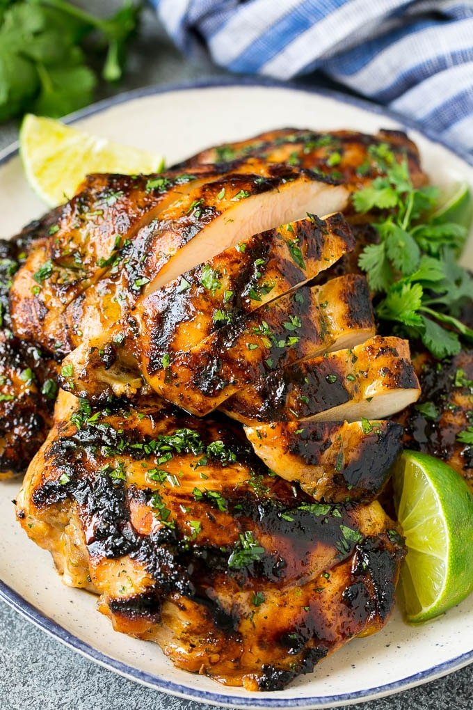

BBQ Chicken

Delicious citrus marinade chicken recipe
Using some boneless skinless chicken thighs, prepare yourself for incredible flavors that will keep you going back for more. You can make in large or small batches, though we recommend around 4-5lbs of chicken for these measurements.
Ingredients:
- 4 lbs of boneless chicken thighs
- 1 cup Soy sauce
- 1 cup 7up
- 1/2 cup olive oil
- 5 cloves garlic, minced
- 2 tbsp black pepper
- 2 tbsp salt
- 1 tbsp lime juice
- 1 tbsp lemon juice
Directions:
- Combine chicken and all ingredients into a leak-proof container or bag, marinade for at least an hour. Best results after 24 hours
- Preheat oven to 400 degrees
- Line a large baking pan with parchment paper for easier cleaning later
- Place chicken thighs on parchment paper so they're not touching each other
- Cook in the oven for twenty minutes, turning over after ten minutes
- Remove chicken from oven and place on cooling rack, let rest for five to ten minutes